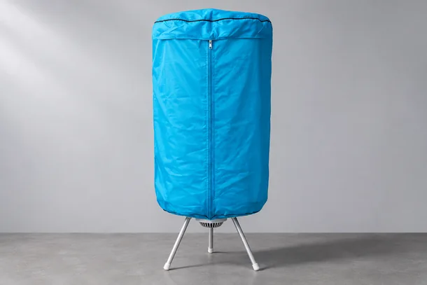

Сушилка для одежды C-PCD-2
Сушка на плечиках
Под чехлом тёплый воздух поднимается от основания к развешанной одежде.
- Таймер
- Поворотный
- Способ сушки
- Тёплый воздух
- Стойка
- Складная
Как сушить одежду в чехле

За тканевым чехлом
Передняя молния открывает доступ к перекладинам для плечиков.
Кому удобна сушка на плечиках
Рабочие рубашки и блузки
Расправьте воротник и рукава на плечиках, затем повесьте их на верхние перекладины. Между соседними вещами оставьте промежуток, чтобы тёплый воздух проходил вдоль ткани с обеих сторон.
Разная плотность ткани
Тонкая футболка и плотная манжета могут высохнуть в разное время. Время обдува задают поворотом ручки. Открывающаяся спереди молния позволяет проверить одежду и снять уже сухую вещь.
Когда для сушки нет отдельной комнаты
Для сушилки нужен участок пола рядом с розеткой и свободный подход к молнии. Когда снимете вещи, сложите стойку. На её место снова можно поставить гладильную доску или стул.
От развешивания до таймера
Разместить вещи
Расстегните чехол и развесьте вещи внутри, оставив промежутки между ними.
Закрыть чехол
Закройте молнию. Во время сушки тёплый воздух подаётся внутрь чехла.
Выбрать время
Поверните ручку на нижнем блоке, чтобы задать время обдува.
Хранение между сушками
Пустую стойку можно сложить и убрать между сушками.

Характеристики
Все параметры 3
- Принцип сушки
- Тёплый воздух
- Таймер
- Поворотный
- Конструкция
- Складная
От чего зависит время сушки?
Плотность ткани, остаточная влага после отжима и расстояние между вещами влияют на то, когда их можно будет снять.
Сколько плечиков можно повесить?
Ориентируйтесь на толщину и ширину одежды. Две объёмные вещи занимают на перекладине больше места, чем две тонкие рубашки. Вокруг каждой вещи должен оставаться проход для воздуха.
Подойдёт ли чехол для длинной одежды?
Сравните длину вещи на плечиках со свободной высотой от верхней перекладины до нижнего блока. Подол должен свободно висеть над местом подачи воздуха.
Что делать с трикотажем, который сушат лёжа?
Сверьтесь с ярлыком вещи. В C-PCD-2 одежда висит и обдувается тёплым воздухом. Пометка о горизонтальной сушке означает, что форму этой вещи лучше сохранять на плоской поверхности.

Сушилка для одежды
C-PCD-2
[22 990 ₸]
- [В наличии]
- Доставка [1–7 дней]
- Гарантия [12 месяцев]
Задать вопрос продавцу
Скопируйте текст и отправьте его продавцу. Название и модель уже указаны.